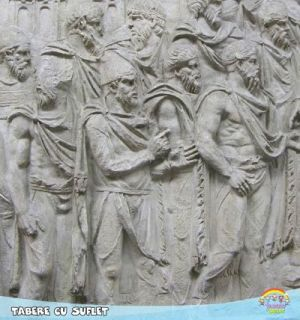

iadema de Valori Tabere cu Suflet cuprinde o constelatie de sapte stele, sapte nestemate minunate, conform legii saptelui Heptaparaparshinokh:
| 💎 | S |
IGURANTA |
| 💎 | I |
NTEGRITATE |
| 💎 | R |
ESPECT |
| 💎 | A |
PLECARE |
| 💎 | C |
OMPASIUNE |
| 💎 | I |
NCREDERE |
| 💎 | S |
PIRIT ECO |

SIRACIS (in lb. greaca: Sirakoi, latina: Siraci, alte forme: Siraceni sau Seraci) a fost o populatie de origine indo-europeana ce a vietuit in sec IV i.C. - sec II d.C. in Sarmatia Asiatica. A ramas in istorie ca "o natiune mica dar cu trasaturi morale deosebite", dupa cum ii descrie Tacitus in cartea sa Historiae.